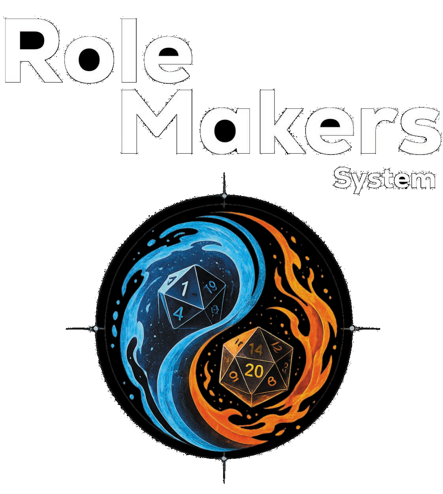

Conferma statistiche
Vuoi confermare le tue statistiche primarie? Una volta confermate resteranno bloccate: potrai modificarle di nuovo solo effettuando un level-up.

Se Chrome segna il file come "non sicuro" o il download resta fermo: tocca la notifica di download, poi "⋮" → "Scarica comunque" (Chrome lo fa solo perché l'app è poco diffusa, non è un problema reale).
Verifica in corso…
—
L'archetipo suggerisce classe/qualità/pesantezza/tecniche coerenti col tipo di PNG (i dadini li ri-randomizzano singolarmente); il dado grande genera subito la scheda completa coi valori qui sopra.
Trascina per inquadrare · Tocca per ingrandire
Copia la scheda negli appunti (senza l'immagine del volto): incollala nella chat col Narratore, che la importerà nella sua Area. Ricopiala dopo ogni aggiornamento importante.
Verifica in corso…
La classe determina i moltiplicatori di HP/MP, la dotazione iniziale e i P.R. di partenza.
Se non definita nel background: 1d20.
Il testo grigio in ogni campo è un consiglio di compilazione: sparisce appena scrivi qualcosa di tuo. Ogni argomento è un contenitore a sé: scegli quale aprire dal menu qui sotto, invece di scorrere un'unica pagina lunghissima. I campi si leggono per intero così come sono — per modificarli tocca "Modifica", poi "Conferma e blocca" quando hai finito (evita ritocchi involontari).
Familiari, amici, colleghi o chiunque abbia un legame col personaggio: aggiungi una scheda per ogni NPC.
In attesa che il Narratore accetti la tua richiesta di ingresso: PP, danni HP e uso MP si potranno segnare solo dopo la conferma.
Nessuna locazione ha ancora la scheda confermata (tab "Equipaggiamento", bottone "Conferma scheda"): conferma almeno un pezzo di armatura per poterlo bersagliare.
Nessuna Tecnica o Abilità ha ancora un danno base impostato (retro scheda, colonna "Danno").
Chiama il Narratore per iniziare un combattimento: non appena strutturato, il tuo personaggio agirà per primo.
Richiesta inviata: in attesa che il Narratore strutturi il combattimento.
Il riposo o la meditazione recuperano HP/MP spendendo i P.R.: imposta il moltiplicatore (a scaglioni di un quarto, es. 0.25, 0.5, 0.75, 1, 1.25…) e scegli come dividere il recupero ottenuto tra HP e MP in Uso.
In attesa che il Narratore avvii la sessione di gioco: Riposo, Tecniche, Abilità e gli esiti di Stile/Carisma/Fortuna sono disponibili solo durante la giocata.
Recupero disponibile: 0 punti (P.R. 0 × moltiplicatore)
Residuo non speso: 0
—
Oppure consuma subito una risorsa di recupero HP:
Oggetti consumabili come bende, pozioni o elisir: scrivi il nome a mano, scegli l'effetto e il valore, imposta le scorte. "Usa" applica l'effetto e scala di 1 le scorte, che non scendono mai sotto zero. Il recupero HP/MP non supera mai il massimo. Un "Incremento statistica" può puntare anche a un Tratto (Capacità Combattive/Normali, Conoscenze) — pescato fra i tuoi tratti, quelli già noti e approvati dal Narratore in questa storia, o uno nuovo da proporre — e resta attivo finché non lo sospendi tra gli "Incrementi attivi" qui sotto: avvisane il Narratore, che deciderà quando togliere il bonus. "Potenziamento a tempo" applica invece un bonus a un Tratto per un numero di turni (solo in combattimento), poi scompare da sé.
| Nome | Effetto | Bersaglio | Valore | Scorte |
|---|
Nessun incremento attivo.
Tiro di Bloccare con lo/gli scudo/i equipaggiato/i: Dif scudo + Dif del personaggio (bonus attivi inclusi) + tiro puro di Dif (dado in base al valore base, senza bonus).
Nessuno scudo equipaggiato.
Scegli quali armi equipaggiate entrano nell'attacco (massimo due, stessa Tipologia — bianca o a distanza non insieme): con due armi la seconda vale metà danno. Il Danno Fisico somma FOR e/o DEX puri (senza bonus di scheda) se l'arma li usa; il Danno Magico (F.MEN, a parte) è calcolato separatamente.
Nessuna arma equipaggiata.
Prova di un attributo primario: il dado dipende dal suo valore (d4 fino a 10, d6 fino a 20, d8 fino a 30, d12 fino a 40, d12+d8 oltre) e il risultato si somma al valore stesso della statistica.
—
| Oggetto | Peso (Kg) | Note |
|---|
| Tiro | Carisma | Stile / Fortuna |
|---|
Sei in una storia: il livello lo assegna il Narratore dal suo Account.
| Valore | AP |
|---|
| Lv | AP | Perk (Capacità/Combattive/Conoscenze) | Nota |
|---|
Nessun campo qui è obbligatorio per continuare: puoi completarli anche più tardi dalla scheda del personaggio.
Nessun campo qui è obbligatorio per continuare: puoi completarli anche più tardi dalla scheda del personaggio.
Nessun campo qui è obbligatorio per continuare: puoi completarli anche più tardi dalla scheda del personaggio.
Nessun campo qui è obbligatorio per continuare: puoi completarli anche più tardi dalla scheda del personaggio.
Nessun campo qui è obbligatorio per continuare: puoi completarli anche più tardi dalla scheda del personaggio.
Nessun campo qui è obbligatorio per continuare: puoi completarli anche più tardi dalla scheda del personaggio.
Ogni storia raccoglie i personaggi che i giocatori ti inviano ed è protetta dalla sua password. I giocatori vedono solo i propri personaggi sul loro dispositivo. La premessa in PDF si carica da "Premesse di gioco" nell'indice.
Se il personaggio è già presente viene aggiornato alla versione incollata.
La premessa in PDF di questa storia si carica e si condivide da "Premesse di gioco" nell'indice (☰ in copertina).
Scegli con quale ruolo vuoi usare l'app: Narratore per gestire le tue storie, Giocatore per i tuoi personaggi. Accesso e registrazione si trovano in copertina.
—
—
—
Una campagna eliminata resta qui per 3 giorni, recuperabile in ogni momento. Allo scadere, i dati condivisi vengono eliminati definitivamente (la scheda dei giocatori resta nel loro archivio).
—
Storie a cui i tuoi personaggi hanno già chiesto di entrare, o di cui già fanno parte.
—
Verifica in corso…
Ogni storia ha una premessa in PDF, leggibile dentro l'app da te e dai giocatori. Apri una storia (serve la sua password) per caricarla o sostituirla. Le storie si creano da "Area del Narratore".
Carica il PDF della premessa (fino a 30 MB), dagli un nome, poi copia l'invito da condividere con i giocatori qui sotto. Mentre lo si legge nell'app, gli screenshot sono bloccati su Android; sul link web viene mostrata solo una filigrana come deterrente.
Condividi la premessa incollando questo invito nella chat coi giocatori (loro lo incollano dal popup "Premesse della storia").
Buff, rigenerazione o danno nel tempo senza una Tecnica/Abilità specifica (es. veleno ambientale, condizione narrativa). Il countdown scende solo quando premi "Avanza turno".
Crollo, esplosione, danno d'area: nessun personaggio attaccante, solo un bersaglio, un danno fisso e una Difficoltà da battere per schivare/bloccare.
Anche senza tratto (o in alternativa al tiro), il personaggio potrà sempre superare il passaggio spendendo una propria Tecnica o Abilità — riesce sempre, al costo suo.
Il Narratore decide se questo attacco è a sorpresa (niente schivata/blocco, solo la salvezza di Resistenza) e se schivata/blocco sono comunque concessi.
Inserisci il valore uscito su ciascun dado tirato realmente al tavolo dal giocatore — l'app applica comunque tutta la matematica (bonus, tiri doppi, droghe, ecc.) su questi valori invece di tirarli da sé.
Scegli quale campo mostrare ai giocatori (es. dopo un tiro di Percezione/Investigazione/Osservare riuscito).
Sei sicuro di voler scegliere questa classe?
Vuoi confermare le tue statistiche primarie? Una volta confermate resteranno bloccate: potrai modificarle di nuovo solo effettuando un level-up.
Vuoi confermare i tuoi tratti (Conoscenze, Capacità Normali, Capacità Combattive)? Una volta confermati resteranno bloccati: potrai modificarli di nuovo solo effettuando un level-up.
Vuoi confermare e bloccare questa sezione? I campi torneranno di sola lettura: per modificarli di nuovo dovrai toccare "Modifica".
Vuoi uscire dal gioco?
Regala una copia di questo personaggio a un giocatore già iscritto a una tua campagna: resta anche a te, come modello riutilizzabile per altri.
Hai già compilato Tecniche/Abilità legate alla classe attuale: cambiando classe verranno svuotate (il numero di Tecniche/Abilità dipende dalla classe). Vuoi continuare?
Classe, statistiche primarie, tratti e Tecniche/Abilità iniziali verranno bloccati: potrai modificarli di nuovo solo con un level-up. Il personaggio sarà considerato creato.
—
—
—
Questo personaggio ha modifiche non ancora sincronizzate sia su questo dispositivo sia nel cloud. Tocca una carta per aprire la scheda completa di quella versione prima di scegliere — poi conferma quale tenere qui sotto.
—